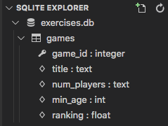

24.9. Exercises: Databases¶
In these exercises, you will perform several CRUD operations with a new database file.
24.9.1. Part A: Set Up a New Database¶
- Launch Visual Studio Code and use the File menu to open your
database_practicedirectory. - Double-click the
.gitignorefile to open it in the editor. - Choose a name for a new database file (like
exercises.db) and enter it on its own line in.gitignore. - Create an
exercises.pyfile. Start by importing thesqlite3module, then open a connection to your new database. - Don’t forget to define a
cursorobject. - Run the program. Your new database should appear in the file tree.
The setup is done. You are ready to go!
24.9.2. Part B: Add a Table¶
Imagine that you want to apply your new database skills to bring some order to
your game closet. To do this, you will use a games table to store some
information. The table needs at least 5 columns:
game_id: This is the primary key assigned to each row in thegamestable.title: This is the name of the game.num_players: Gives a range for the number of people required to play the game.min_age: Identifies the youngest recommended player age for the game.ranking: Assigns a value of 1 - 5 to the game. The higher the number, the more you like the game.
The title and num_players columns will hold TEXT data types.
game_id and min_age will be integers. ranking will be a FLOAT
data type.
Define a
sql_queryvariable and assign it a string to create thegamestable. Be sure to include thePRIMARY KEYsyntax for thegame_idcolumn.Use
cursor.execute()to run the SQL query and create the new table.Verify that the table was created by expanding the database name in the SQLITE EXPLORER tab.

24.9.3. Part C: Add Rows¶
Assign a new string to your
sql_queryvariable. It should use the INSERT INTO keywords to add an entry to thegamestable. Remember to use placeholders after theVALUESkeyword.For the first new row, set the
titleas “Qwirkle”, thenum_playersas “2 - 4”, themin_ageas 6, and the ranking as 4.5.You do NOT need to include a value for
game_id, since thesqlite3module automatically assigns primary key values.Reuse the
sql_querystring to add another entry to thegamestable. This time, choose your own values for the columns.It is possible to fill in only SOME of the columns for a given row. To skip one or more columns, leave their names and values out of the SQL command.
Add 3 - 5 more rows to the
gamestable. At least one of these should NOT fill in all of the columns.Finish off your code with a
.commit()statement, then.close()the connection to the database.Run your program, then use the Play button in the SQLITE EXPLORER tab to view the
gamestable.
Note
Notice that NULL appears in a cell whenever a value for that column
is not assigned.
24.9.4. Part R: Access Game Data¶
For this section, you will need to use several different query strings to complete the steps.
- Use SELECT … FROM … to return results from
all of the columns in the
gamestable. - Use
list()to convert the returned results, then print the data to the console in a clear fashion. Tip: Define a function to accomplish this. - Repeat step 1, but return and print a single entry based on its
game_idvalue. You will need to include theWHEREkeyword in your SQL query. - Repeat step 1, but print only the
titledata from the table. Bonus: Display the games in alphabetical order. - Select the
titleandmin_agedata, but print the results in DECREASING order by age.
24.9.5. Part U: Modify Game Data¶
Remember to include a WHERE clause in your UPDATE
queries! If you leave it out, then ALL rows in the table will be changed.
Don’t forget to view the games table after each step to confirm your work.
Update a single record based on its
game_id.- The first entry we added in Part C has a
game_idof1. UseUPDATE ... SET ... WHEREto change therankingfor this entry to a different value. - Use a single
UPDATEstatement to change two columns for the entry withgame_id= 4.
- The first entry we added in Part C has a
Use ALTER TABLE to add a new column, called
will_donate, to the table. Set the data type toBOOLEAN.With a single
UPDATEcommand, set thewill_donatevalue toTruefor all entries that have arankinglower than 3.0.Note
SQLite converts boolean values to integers.
Trueis stored as1, whileFalseis saved as0.
24.9.6. Part D: Remove Games¶
Remember, there is no undo option after running DELETE!
- Delete a single row from the table based on its
game_idvalue. - Write a single
DELETEcommand to remove any games from the table that you don’t consider fun. You can use either therankingorwill_donatevalue to decide which rows to remove.
24.9.7. Bonus Exercises¶
Whew! You made it through all the exercises. Nice work!
Take a quick break and, if you wish, try these additional tasks that go above and beyond the basic SQL commands.
- Use logical operators (
AND,OR,NOT) inWHEREstatements. - Print the complete records for the games, but only if the
min_agecolumnIS NOT null. - Experiment with the ORDER BY keywords.